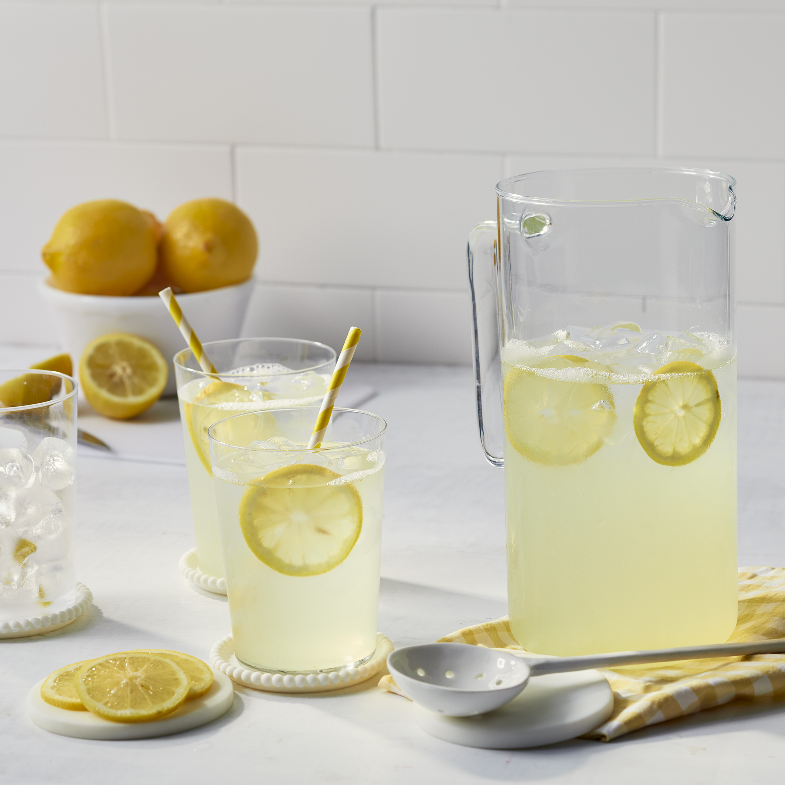

This classic lemonade recipe is the one my mom used to make for me when I was little. Ah, the taste of summer! It's the perfect combination of sweet and tart. When using a clear pitcher, adding a few of the juiced lemon halves makes it look prettier.
Juice lemons; you should have 1 cup juice.
Combine juice, sugar, and water in a 1/2-gallon pitcher. Stir until sugar dissolves. Taste and add more water if desired.
Chill and serve over ice.